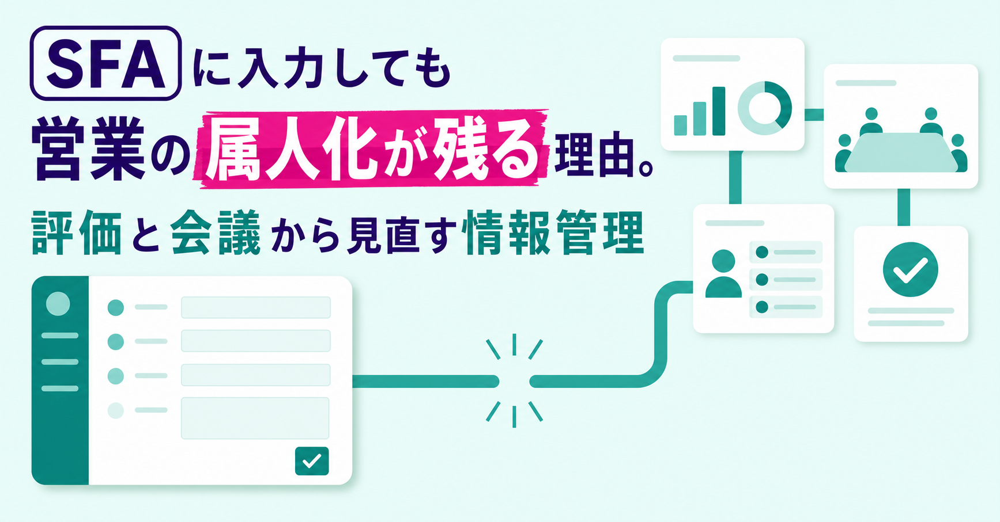
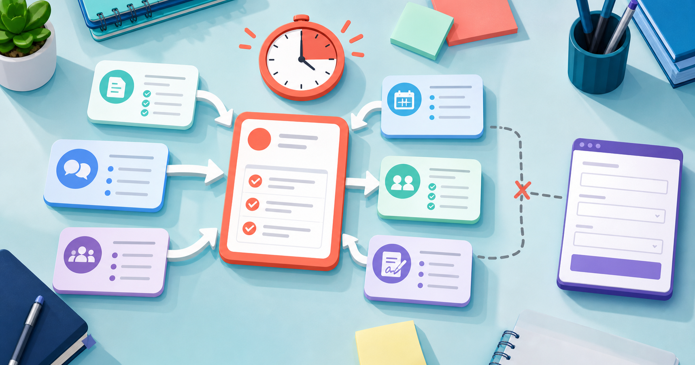
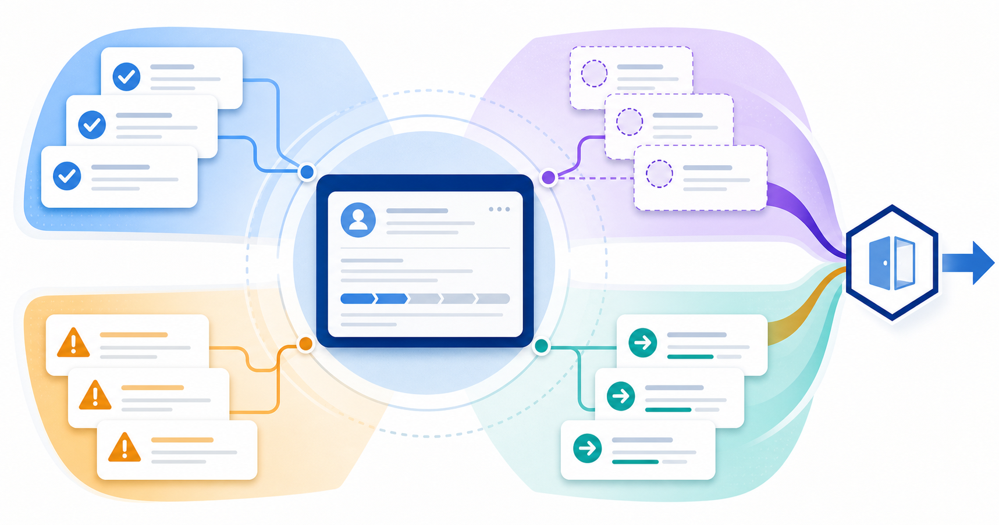
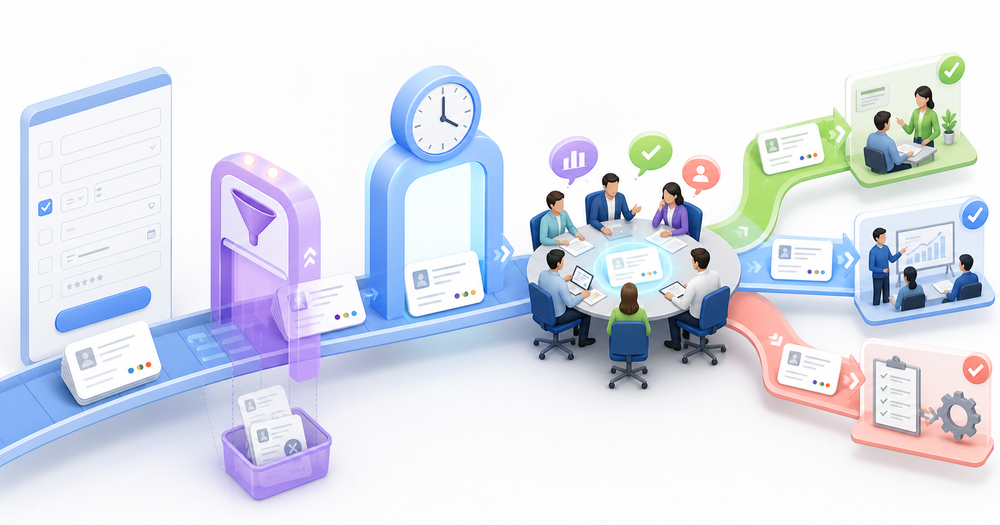
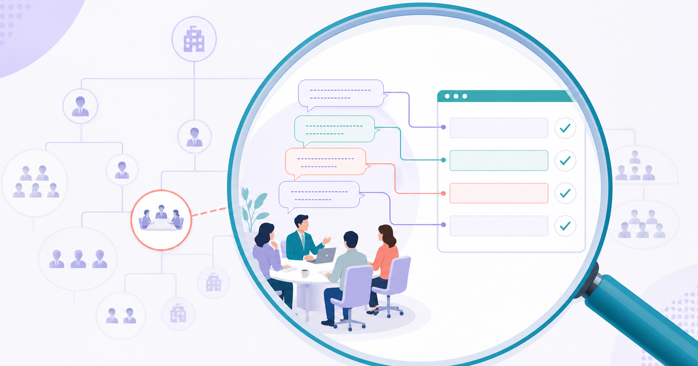
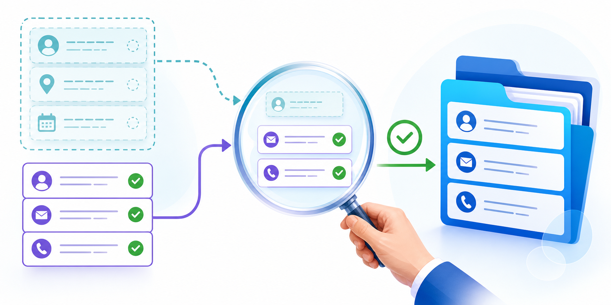
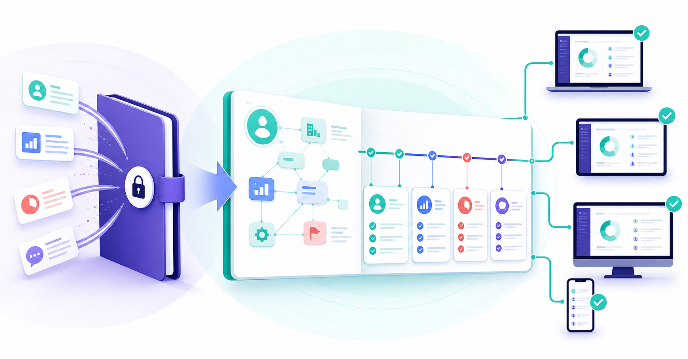

SFAに入力しても営業の属人化が残る理由。評価と会議から見直す情報管理
みなさんこんにちは、Valorize AI代表の鈴木創也です。
営業会議の直前に、担当者がSFAやCRMの案件情報をまとめて更新していないでしょうか。
画面には金額や進捗状況が並んでいます。ところが、顧客が何を懸念しているのか、案件が止まっている理由は何か、次に何を確認すべきかは、担当者に聞かなければ分かりません。情報を蓄積する仕組みはあっても、顧客の状況や案件を進めるための判断は、担当者の頭の中に残ったままです。
なぜ、入力欄を用意して更新を促しても、組織で使える情報が残らないのでしょうか。
原因の一つとして考えられるのは、入力した情報の使い道が、営業担当者に見えていないことです。管理者が入力項目を増やしても、その記録が会議や案件支援に使われなければ、入力は報告のための追加作業に見えます。営業の属人化を減らすには、日常の評価、案件会議での判断、SFAに残す情報を一つの流れとして設計する必要があります。
入力不足を営業担当者の意識だけで説明できない

営業担当者は、顧客対応、提案の準備、社内調整、契約手続きを並行して進めています。SFAへの入力が報告のためだけの作業に見えれば、期限の迫った顧客対応を先に進めるのは不自然ではありません。
久世のkintone活用事例では、以前使っていたSFAが営業担当者の負担を増やし、目の前の売上が優先されたため、利用が定着しなかったと説明されています。同社は再導入にあたり、商談記録を週次や月次の報告、会議資料、担当交代時の引き継ぎに使えることを示しました。入力した情報が自分たちの業務にも役立つと理解されたことで、日常的に利用されるようになったと紹介されています。
この一社の事例だけで、SFAへの入力が進まない原因を一般化することはできません。操作の難しさ、項目の多さ、入力期限、管理者の支援など、複数の要因が重なる場合もあります。ただし、使い道が分からないことが原因の一つであれば、項目を増やしたり更新を催促したりするだけでは解決しません。管理者は、入力された情報を誰がどこで使い、何を決め、その判断を営業担当者へどう伝えているかを確認する必要があります。
日常の評価と会議で求める情報が食い違う
日々の営業管理では、受注額、商談数、活動件数だけを確認しているとします。一方、案件会議では、顧客の判断条件、提案への反応、競合との違い、受注を妨げる懸念、次の確認事項まで詳しく尋ねます。この二つが切り離されていれば、営業担当者は、普段は評価の対象にならない情報を会議の直前だけ書くことになります。
ここでいう「評価」は、人事評価に限りません。上司が日常的に確認する数字、会議で評価される行動、優先するよう指示される仕事も含みます。営業担当者が「組織は何を成果として見ているか」を判断する手掛かり全体です。
これに対して、案件支援に必要な情報とは、顧客とのやり取りを引き継ぎ、提案内容を検討し、上司や他部門が次の対応を決めるための材料です。両者が食い違ったまま登録件数だけを評価すれば、入力欄は埋まっても、案件を進めるための情報が残らないおそれがあります。
案件を進める判断から残す情報を決める

では、何を共通の情報として残せばよいのでしょうか。顧客との会話をすべて議事録にして、どの案件にも同じ詳しさを求めれば、入力の負担が膨らみます。
スター精密のSalesforce活用事例では、業務を整理したうえで入力項目を必要最小限に絞り、入力した情報を会議資料にも使えるようにしたと紹介されています。ただし、同社が選んだ項目をそのまま他社へ当てはめることはできません。どの場面で、誰の判断を助けるのかによって、残すべき情報は変わるからです。
案件支援と引き継ぎを目的とするなら、次の四つが検討の出発点になります。
- 顧客に確認できた事実
顧客が実際に話したこと、合意したこと、起きたことを記録します。担当者の推測と分けておけば、後任者もこれまでの経緯を確認できます。 - 顧客の課題や検討条件に関する仮説
提案の前提となる見立てのうち、まだ顧客に確認できていない内容を記録します。仮説だと明記することで、チームは事実と混同せず、次の商談で確認できます。 - 案件を進めるうえでの懸念
予算、決裁、競合、顧客社内の調整など、案件の進行に影響しそうな未確認事項を記録します。上司や他部門が支援の要否を判断する材料になります。 - 次の行動と確認事項
次に誰が行動するのか、その担当者が何を確認するのかを記録します。次の対応を担当者の記憶だけに任せず、会議後もチームで追えるようにします。
この四分類は、外部機関が定めた標準ではなく、実務で検討するための案です。企業属性や商談確度などの定型項目も含め、自社の商材、営業工程、顧客の購買過程に合わせて調整してください。
懸念を記録した担当者に組織がどう応えるか
失注の兆しや競合の優位性を記録すると自分の評価が下がる。営業担当者がそう受け止めている組織では、案件の状況が実態より楽観的に記録される可能性があります。ただし、今回の調査では、この因果を一般化できる国内の一次資料までは確認できませんでした。
そこで、担当者の心理を推測するのではなく、懸念が記録された後の組織の対応を確かめます。一定期間の該当案件について、会議で事実関係を確認したか、支援が必要かを判断したか、判断理由と次の行動を記録したかを調べます。あわせて、懸念を書いた担当者を責めるだけで終わっていないかも確認します。
支援しないと判断した案件があっても、その理由が記録されていれば問題ではありません。見るべきなのは、記録された懸念が意思決定に使われ、その結果が担当者へ伝わったかどうかです。
入力した情報を業務に生かす三つのルール

入力項目だけを整理しても、会議の進め方や日常の評価が変わらなければ、SFAは報告を保存するだけの場所へ戻ります。必須とする情報、更新する時期、記録を使った後の対応を一組にして決めます。
使わない項目を必須にしない
まず、案件会議で管理者が実際に尋ねた質問と、判断に使った情報を記録します。その情報がSFAにあるか、担当者が同じ意味で入力しているか、会議までに更新されているかを照合します。
会議で使っていない必須項目があれば、法令への対応や後工程など、別の用途があるかを確認します。用途を説明できない項目は、削除するか任意入力へ変える候補です。項目を減らす目的は、管理を緩めることではありません。判断に必要な情報を期限までに残してもらうために、入力の優先順位を明確にすることです。
更新期限を情報の利用場面に合わせる
すべての項目を同じ期限までに更新する必要はありません。顧客との約束や重大な懸念は、商談後の早い段階で共有しなければ支援が遅れます。週次会議で比較する情報であれば、会議前までにそろえる運用も考えられます。担当交代に備え、常に最新の状態にしておくべき情報もあるでしょう。
多田文房堂のSalesforce活用事例では、再導入時に活動履歴の入力から始め、その後、商談情報や機器情報へ対象を広げたと紹介されています。この事例から参考にできるのは、「活動履歴から始める」という手順そのものではありません。一度にすべての入力を求めず、利用目的を確かめながら対象を広げる考え方です。
記録に基づいて支援し、その行動を評価する
案件の懸念が記録されたら、上司の商談同行、社内調整、提案内容の再検討など、必要な支援を選びます。顧客に関する仮説が書かれていれば、次の商談で何を尋ねるかをチームで検討できます。担当交代が円滑に進んだときは、必要な情報を残した前任者の行動も共有できます。
オフィスナビのMazrica Sales活用事例では、会議で使う情報をSFAやCRMに集約し、活動履歴の入力を評価対象とする制度を整えたと紹介されています。同社は個別の支援やフィードバックも組み合わせています。したがって、「登録件数を評価すれば利用が定着する」と単純に結論付けることはできません。
評価すべきなのは、登録した文字数や件数の多さではありません。案件支援に必要な情報を期限までに共有したか、その情報が会議や顧客対応の判断に使われたかを確認します。売上などの成果指標と、判断材料を残した行動は性質が異なるため、一つの数字にまとめず、分けて評価します。
確認する人も決めておきます。たとえば案件会議の責任者が会議後に、必要な情報が期限までに更新されたか、事実と仮説が分けられているか、記録をもとに支援の要否や対応方針を決められたかを確認します。不足があれば登録件数を責めるのではなく、項目の意味、更新期限、会議での使い方のどこに問題があるかを調べ、運用を見直します。
一つの案件会議で改善を試す

全社の入力フォームから改修すると、現場で役立つかを確かめる前に、項目の定義や設定作業が膨らみます。まずは、一つのチームの案件会議、または一つの営業工程に絞って試します。
手順は次のとおりです。
- 会議で出た質問を集める
顧客の反応、決裁の条件、案件の懸念、次の行動など、管理者が担当者へ口頭で確認した内容を記録します。 - 質問と入力項目を対応させる
会議で必要だった情報が既存のどの項目にあるか、項目の意味が担当者ごとにずれていないか、会議までに更新されていたかを確認します。 - 使っていない項目と足りない情報を分ける
会議では使わないものの別の業務に必要な項目と、用途を説明できない項目を分けます。毎回口頭で尋ねている情報は、新たに記録する候補です。 - 一つの場面で試して結果を比べる
新規商談後の記録、失注が懸念される案件の更新、担当交代などから一つを選びます。試行前の会議記録と比べ、同じ質問を口頭で繰り返す回数が減ったか、支援の要否と誰が支援するかが会議中に決まったか、後任者が追加の確認をせずに経緯を把握できたかを振り返ります。必要な情報が欠けていないか、入力時間が増えすぎていないかも確認します。
管理者が最初に説明すべきなのは、入力方法ではなく、記録した情報の使い道です。誰が何を判断するために使うのか、使われない項目をどう見直すのかまで示せば、入力は監視のための報告ではなく、顧客対応と案件支援の経緯を共有する作業になります。
営業会議で同じ質問を繰り返す原因は、担当者が情報を抱えていることだけではありません。記録した情報が支援や判断に使われ、その結果が担当者へ伝わる流れがないことも、原因の一つかもしれません。
AIに下書きを任せても記録の正確さは人が確かめる

企業情報の収集、提案仮説の下書き、商談前に確認する項目の整理には、生成AIを使える場面があります。しかし、AIが文章を作っただけで、SFAに登録する情報の正確さが保証されるわけではありません。
Salesforceの「セールス最新事情」第6版は、2024年に世界27カ国の営業職5,500人を対象に実施された調査で、日本では300人が回答しています。日本の回答者は、不完全なデータ、不正確なデータ、古いデータを、営業部門がAIを導入する際の大きな障壁として挙げています。
経済産業省と総務省の「AI事業者ガイドライン」第1.2版は、AIの利用者に対し、用途に応じて入力データの正確性と最新性を確保し、出力の精度やリスクを理解して利用するよう求めています。AIの出力が業務や顧客に重大な影響を及ぼす可能性がある場合には、人間が判断に関与する仕組みも例示しています。
営業でAIを使う場合も、顧客との会話で確認した事実、提案の優先順位、顧客へ送る内容は、誤りが与える影響に応じて人が確認します。AIが外部情報から作った下書きと、顧客に確認した事実を、同じ情報として扱うべきではありません。情報源と確認状況を分けて記録し、誰が正式な顧客情報として登録するかを決めます。この確認を省けば、担当者の記憶に依存していた状態が、未確認のAI出力に依存する状態へ変わるだけです。
顧客理解を担当者の記憶だけに頼らない

SFAやCRMを導入しただけでは、営業の属人化は減りません。日常の評価、会議で使う情報、案件支援のために残す記録が食い違っていれば、担当者は入力する意味を感じにくく、管理者も口頭での確認に頼り続けます。
次の案件会議で、管理者が口頭で尋ねた内容と、SFAの必須項目を並べてみてください。使っていない項目、足りない情報、更新が間に合っていない情報を分けると、最初に見直すべき箇所が分かります。
Valorize AIが提供するSales Triggerは、人が定めた対象企業の条件をもとに、企業リストの作成、対象企業の調査、企業ごとの提案仮説の準備を支援する半自動化AIエージェントです。営業担当者が顧客との対話や提案方針の判断に集中できるよう、商談前の調査と提案準備を支援します。作成したアプローチの内容は、人が送信前に確認します。